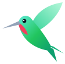

Kolibri
Report cards for crypto KOLs on X and Telegram
Kolibri is ready
- Open X or Telegram Web. Kolibri reads the posts on screen and notes every $ticker and contract address.
- Look for the hummingbird next to a name or channel title. The letter is the grade; hover it for the report card.
- On a profile, press Scan timeline. On a public Telegram channel, history loads by itself from t.me.
Where Kolibri appears
What counts as a call
Prices
Tickers listed on Binance are priced from Binance. Tokens that trade only on DEXes are priced from GeckoTerminal, which answers about 10 requests a minute without a key, so a long history takes a few minutes. A free CoinGecko Demo key raises that to 30.
Kolibri network optional
A Kolibri server collects calls around the clock, so report cards include history you never scrolled past. The public leaderboard is free; full history and CSV export of network data need Kolibri Pro.
Your data
Everything Kolibri collects stays in this browser.
How report cards work
- A call
- The first time an account posts a token’s $ticker or contract address. Mentions of the same token within 7 days are the same call. Posts that list more than six tokens are commentary, not calls. Stablecoins, fiat, stock tickers and (unless you turn them on) majors are ignored.
- Entry price
- The price within 15 minutes after the post: the close of the 15-minute candle that contains it.
- 24h, 7d and peak
- The price 24 hours and 7 days after the post, and the best 15-minute close within those 7 days. Tokens that launched on a bonding curve are followed into the pool they migrated to.
- Where prices come from
- Binance spot for listed tickers, with full history. DEX tokens are matched with DexScreener and priced with GeckoTerminal candles, which go back six months on the free API; older DEX calls show n/a. A ticker without an address is matched to its most liquid token, so check the market shown on hover.
- Grade
- A score from 0 to 100: 60% the share of calls that were up after 7 days, 40% the median 7-day return (capped at ±100%), pulled toward 50 while there are few calls. A is 75 and up, B 62, C 50, D 38, F below that. A grade appears once 3 calls have a 7-day result.
- $100 in each call
- What putting the same amount into every call and selling a week later would have returned.
- Privacy
- Kolibri reads the X and Telegram Web pages you open and keeps what it finds in this browser. It asks Binance, DexScreener and GeckoTerminal for prices and t.me for public channel posts. Nothing else leaves your device unless you connect a Kolibri network server.